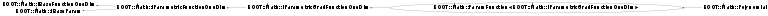

class ROOT::Math::ParamFunction<ROOT::Math::IParametricGradFunctionOneDim>: public ROOT::Math::IParametricGradFunctionOneDim
Base template class for all Parametric Functions.
The template argument is the type of parameteric function interface is implementing like
Parameteric 1D, Multi-Dim or gradient parametric.
A parameteric function is a Generic Function with parameters, so
it is a function object which carries a state, the parameters.
The parameters are described with a standard vector of doubles.
This class contains the default implementations for the methods defined in the
IParamFunction interface for dealing with parameters
Specific parameteric function classes should derive from this class if they want to profit from
default implementations for the abstract methods.
The derived classes need to implement only the DoEvalPar( x, p) and Clone() methods for non-gradient
parameteric functions or DoParameterDerivative(x,p,ipar) for gradient par functions
@ingroup ParamFunc
This class is also known as (typedefs to this class)
ROOT::Math::ParamFunction<IParamGradFunction>, ROOT::Math::Polynomial::ParFuncFunction Members (Methods)
This is an abstract class, constructors will not be documented.
Look at the header to check for available constructors.
public:
Class Charts
{kind=link}
{kind=link}
{kind=link}
{kind=link}

Function documentation
const double * Parameters() const
copying constructors (can use default ones)
Access the parameter values
{ return &fParams.front(); }void SetParameters(const double* p)
Set the parameter values
@param p vector of doubles containing the parameter values.